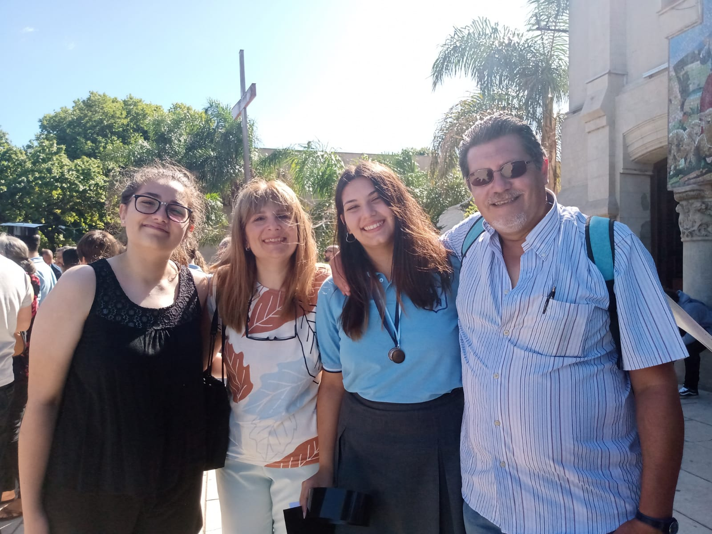
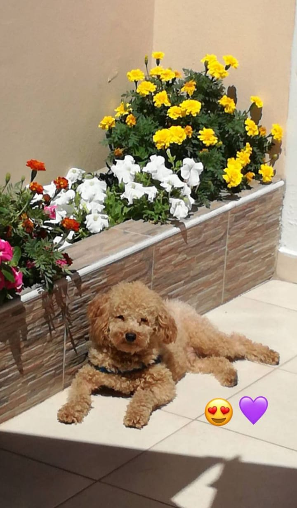

⋇⊶⊰❣⊱⊷⋇ ⋇⊶⊰❣⊱⊷⋇ ⋇⊶⊰❣⊱⊷⋇ ⋇⊶⊰❣⊱⊷⋇ ⋇⊶⊰❣⊱⊷⋇ ⋇⊶⊰❣⊱⊷⋇ ⋇⊶⊰❣⊱⊷⋇ ⋇⊶⊰❣⊱⊷⋇ ⋇⊶⊰❣⊱⊷⋇ ⋇⊶⊰❣⊱⊷⋇ ⋇⊶⊰❣⊱⊷⋇ ⋇⊶⊰❣⊱⊷⋇ ⋇⊶⊰❣⊱⊷⋇ ⋇⊶⊰❣⊱⊷⋇ ⋇⊶⊰❣⊱⊷⋇
˚ ༘♡ ⋆｡˚🦋˚ ༘♡ ⋆｡ BIOGRAFÍA ˚ ༘♡ ⋆｡˚🦋˚ ༘♡ ⋆｡
Mi nombre completo es Maria del Rosario Bonata, pero todos me dicen Ro. Tengo 19 años, nací el 27 de mayo del 2005 en Palermo (Capital Federal, Buenos Aires), sin embargo, desde que tengo memoria vivo en Quilmes.
Mi familia está compuesta por mi mamá, mi papá, mi hermana y mi perrito Milo.
Fui al mismo colegio durante toda mi vida, me egresé del secundario "Instituto San Alfonso" en 2022, con título de Bachiller en Economía y Administración y medalla de honor al mérito.
Estudio inglés desde los 5 años y en el 2021 rendí el First Certificate in English (FCE). Ese mismo año hice un curso de formación profesional en Peluquería.
Trabajo de auxiliar administrativo en la Biblioteca “Dr. Juan Bialet Massé”, es una biblioteca jurídica especializada en temática laboral sobre trabajo, empleo y seguridad social en Argentina
No tengo experiencia relacionada a la informática. Sin perjuicio de ello, tengo un poco de conocimientos de html, css y python (muy poquito)
Como mencioné en el inicio, me gustaría aprender mucho más sobre el diseño de una página web, la interfaz y la experiencia de usuario. También me interesa el área de testing de aplicaciones. Fuera de la informática, quiero formarme en producción audiovisual y de espectáculos; encontrar de cierta forma como combinar o unir estas pasiones.
 